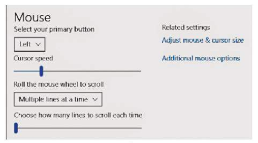
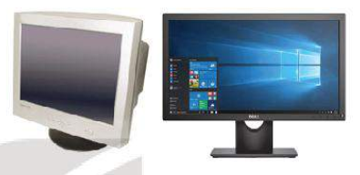
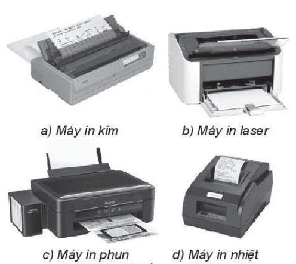
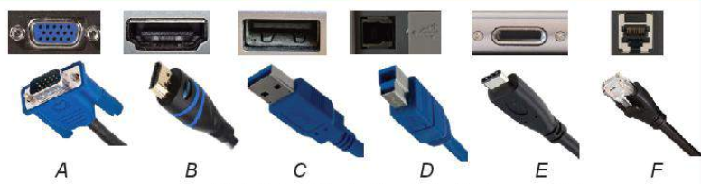
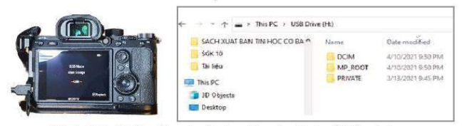

Biết một số thông số cơ bản của thiết bị vào – ra thông dụng, cách kết nối với máy tính cũng như tùy chỉnh được một vài chức năng cơ bản để nâng cao hiệu quả và đáp ứng nhu cầu sử dụng.
Đọc hiểu và giải thích được một số thông số cơ bản của các thiết bị số thông dụng trong các tài liệu để kết nối chúng với máy tính.
Các thiết bị số có khả năng trao đổi dữ liệu với máy tính rất đa dạng. Trong số đó, một số thiết bị không có khả năng xử lí thông tin độc lập, chúng chỉ làm việc khi được kết nối với máy tính. Việc kết nối máy tính với các thiết bị số được thực hiện như thế nào, cần phải tuỳ chỉnh gì khi kết nối chúng với nhau?
1. Một Số Thiết Bị Vào – Ra Thông Dụng
Hoạt động 1: Các thiết bị số có thể kết nối với máy tính
Hãy kể ra một số các thiết bị có thể kết nối với máy tính và nêu chức năng của nó.
Các thiết bị vào – ra là nhóm các thiết bị ngoại vi đa dạng và phong phú nhất của máy tính.
Các thiết bị vào cho phép nhập dữ liệu vào máy tính như bàn phím, chuột, máy đọc mã vạch, máy quét ảnh, camera số, các thiết bị ra chuyển thông tin từ máy tính ra ngoài như màn hình, máy in, máy chiếu. Một số thiết bị có khả năng trao đổi thông tin hai chiều với máy tính có thể được coi vừa là thiết bị vào, vừa là thiết bị ra, ví dụ các bộ nhớ ngoài kết nối theo cổng USB.
a) Một số thiết bị vào thông dụng
Bàn phím: Là thiết bị thông dụng nhất để nhập dữ liệu. Bàn phím có thể kết nối không dây hoặc có dây với máy tính bằng cáp. Nếu nối bằng cáp thì chỉ cần cắm đúng cổng, không phải thiết lập gì thêm.
Chuột: Trong các thiết bị chỉ định đối tượng làm việc trên màn hình (pointing device) có loại luôn gắn với máy tính như bản cảm ứng (trackpad), bi län (trackball), có loại được kết nối với máy tính từ bên ngoài như chuột.
Chuột là thiết bị vào rất phổ biến vì dễ điều khiền chính xác. Hai thông số quan trọng nhất của chuột là phương thức kết nối (có dây hoặc không dây) và độ phân giải, đo bằng dpi (dots per inch), là số điểm riêng rẽ mà chuột xác định được khi dịch chuyên được một inch (2,54 cm).
Tuy nhiên khi sử dụng thì tốc độ của chuột lại rất quan trọng. Tốc độ thể hiện tỉ lệ
giữa khoảng cách con trỏ màn hình di chuyển được so với khoảng cách di chuyển
của chuột trên mặt bàn. Khi chỉnh sửa ảnh cần thực hiện những di chuyển rất nhỏ, do
vậy sẽ khó làm việc nếu tốc độ chuột quá cao. Vì thế, cần biết tuỳ chỉnh chế độ làm
việc của chuột
Để tuỳ chỉnh chế độ làm việc của
Mouse
Select your primary button
left v
Cursor speed
Roll the mouse wheel to scroll
Multiple lines al a time v
Choose how many lines to scroll cach time
Related settings
Adjust mouse & cursor size
Additional mouse options
chuột, em cần mở tiện ích Setting, chọn nhóm chức năng Devices sau đó chọn Mouse để làm xuất hiện cửa số tuỳ chỉnh chuột như Hình 5.1. Vi dụ để tăng/giảm tốc độ của chuột chỉ cần kéo con trượt trên thanh "Cursor speed" sang phải trái; chọn lại nút ưu tiên là phải (right) thay vì trái (left) dưới vị trí "Select your primary button" cho người thuận tay trái. Ngoài ra còn nhiều tuỳ chỉnh khác như chọn hình dáng của chuột, chọn để lại hay không để lại vết di chuyển trên màn hình của chuột....

Hình 5.1. Tùy chỉnh chuột máy tính
b) Thiết bị ra
Màn hình
Màn hình là thiết bị ra phổ biến nhất.
Có nhiều loại màn hình sử dụng các công nghệ khác nhau như đèn chân không (CRT), tinh thể lỏng (LCD), LED hay plasma.
Nhưng dù dùng công nghệ gì thì chúng đều có một số thông số chung như sau:
Kích thước: Được đo bằng độ dài đường chéo màn hình, tính theo inch.
Độ phân giải: Thể hiện bởi số điểm ảnh theo chiều ngang và chiều dọc của màn hình. Ví dụ: VGA (640 x 480 pixel), Full HD (1920 x 1080 pixel).
Khả năng thể hiện màu: Loại đơn sắc (monochrome) chỉ có hai màu, còn loại màn hình màu thể hiện khoảng 16,7 triệu sắc thái khác nhau.
Tần số quét: Thể hiện số lần màn hình lặp lại hình ảnh trong 1 giây. Tần số quét càng cao thì hình ảnh càng mượt mà.
Thời gian phản hồi: Khoảng thời gian cần thiết để điểm ảnh thay đổi màu sắc. Thời gian phản hồi nhỏ thì chất lượng hình ảnh càng tốt.
Có thể tuỳ chỉnh màn hình, chủ yếu là độ sáng. Đối với màn hình rời, việc tuy chình thực hiện qua các nút trên màn hình. Đối với máy tính xách tay, có thể chỉnh
trên bàn phím, ví dụ phím F11 đề giảm sáng và F12 đề tăng sáng.

Hình 5.2. Màn hình máy tính
Máy in Có nhiều loại máy in.
Máy in kim kim sử dụng một hàng kim gõ vào băng mực để lại vết trên giấy. Các chữ hay hình vẽ được tạo thành từ một lưới các điểm nên máy in kim còn gọi là máy in ma trận (matrix printer) hay máy in điềm (dot printer). Tuy chất lượng ảnh rất thấp nhưng chưa có phương pháp nào tốt hơn khi phải in hoá đơn có nhiều liên.
Máy in laser dùng tia laser đề tạo ra sự thay đổi điện áp trên bề mặt của một trống tĩnh điện tương tự với hình cần in. Sau đó trống tĩnh điện sẽ hút các hạt mực siêu nhỏ rồi áp vào mặt giấy, đốt nóng để tạo thành bản in. Máy in laser được dùng phổ biến để in tài liệu.
Máy in phun phun sẽ phun các hạt mực màu nước siêu nhỏ đề tạo ảnh. Máy in loại này thích hợp để in ảnh màu, phông bạt quảng cáo với kích thước đa dạng và chi phi thấp.

Hình 5.3: Một số loại máy in
Máy in nhiệt in trên giấy cảm ứng nhiệt, vùng giấy bị làm nóng đồi sang màu đen. Máy in nhiệt thường dùng đề in hoá đơn bán hàng.
Dù đa dạng nhưng các máy in đều có những thông số chung như sau:
Độ phân giải tỉnh bằng dpi là số điểm ảnh trên một inch theo cả hai chiều ngang/dọc tương tự như cách tạo ảnh trên màn hình. Máy in laser hay in phun có thể đạt được từ 300 dpi đến 600 dpi hoặc hơn, trong khi đó máy in kim hay in nhiệt có độ phân giải thấp hơn nhiều.
Kích thước giấy có thể in được. Máy in khổ giấy A4 phổ biến nhất. Các máy in phông, bạt có thể in được khổ lớn đến vài mét.
Tốc độ in thường tính theo số trang in được trong một phút. Các máy in laser có thể in vài chục trang một phút, máy in phun có thể mất vài phút cho một trang.
Khả năng in màu.
Cách kết nối với máy tính...
Kết nối máy in với máy tính: Một số loại máy in khi kết nối với máy tính, trước lần sử dụng đầu tiên đòi hỏi phải cài đặt trình điều khiển (driver) do hãng sản xuất máy in cung cấp. Nếu máy in kết nối với máy tinh bằng cáp thi cần chọn cáp đúng loại. Nếu kết nối máy in với máy tính qua mạng (có dây hay không dây) thì có thể còn phải tuỳ chỉnh các tham số kết nối mạng.
• Máy tính có thể kết nối được với nhiều thiết bị số, trong đó có các thiết bị vào – ra, thường chỉ làm việc được khi kết nối với máy tính.
• Mỗi thiết bị vào - ra đều có những thông số đặc trưng riêng. Việc hiểu các thông số này giúp ta lựa chọn thiết bị phù hợp. Trong trường hợp cần thiết có thể phải tuỳ chỉnh chức năng của thiết bị theo nhu cầu sử dụng để đạt hiệu quả tốt hơn
2. KẾT NỐI MÁY TÍNH VỚI THIẾT BỊ SỐ

Hình 5.4. Một số cổng kết nối của máy tính
a) Các cổng kết nối
• Các cồng A, B dùng để kết nối với thiết bị ra như màn hình hoặc máy chiếu có tên lần lượt là cổng VGA và cồng HDMI.
- Cổng VGA không dùng tín hiệu số mà dùng tín hiệu tương tự đề truyền hình ảnh tới màn hình hoặc máy chiếu, không truyền âm thanh.
- Cổng HDMI truyền tín hiệu số, truyền đồng thời cả âm thanh và hình ảnh với băng thông lớn nên có thể truyền video với độ phân giải cao.
• Các cổng C, D, E đều thuộc họ cổng USB (Universal Serial Bus). Đặc điểm
chung của phương thức truyền dữ liệu USB là truyền tuần tự, đa năng. Với tốc độ được cải thiện nhanh, USB đã thay thế và giúp loại bỏ nhiều cồng khác được dùng trước đây như cổng COM, cổng Paralel dùng cho máy in, cồng PS/2 cho bàn phím và chuột.
• Cổng F là cổng mạng. Nhiều thiết bị có thể kết nối với máy tính qua mạng.
a) Kết nối máy tính với thiết bị số
Không có một phương thức kết nối chung nào cho các thiết bị số với máy tính. Nói chung, các thiết bị số được cung cấp kèm theo tài liệu kĩ thuật, nêu rõ các đặc tính của thiết bị, cách sử dụng và cách liên lạc với nhà sản xuất để được hỗ trợ. Vì vậy, cần đọc kĩ các tài liệu kĩ thuật hoặc nhờ các chuyên gia tư vấn đề biết cách sử dụng tốt nhất.
Nhờ cơ chế plug & play nên việc kết nỗi máy tính với các thiết bị số thông qua các cồng hay mạng ngày nay dễ dàng hơn nhiều. Trong nhiều trường hợp, chỉ cần cắm cáp kết nối là có thể sử dụng thiết bị ngay, vì dụ chuột hay bộ nhớ ngoài (USB, ổ đĩa rời....). Trong một số trường hợp khác, cần thiết lập các tham số kết nối.
Ví dụ 1. Kết nối máy tính với máy ảnh đề làm việc với ảnh.
Máy ảnh số có thể hỗ trợ một số cách kết nối khác nhau với máy tính: qua cáp USB, wifi hoặc bluetooth.
Hình 5.5 minh hoạ việc kết nối máy tính với máy ảnh qua cáp nối USB. Khi cầm cáp nối với máy tính, máy ảnh sẽ hiện thông báo "USB mode, Mass Storage" với ý nghĩa bộ nhớ được chia sẻ qua cổng USB. SUNG

Hình 5.5. Kết nối máy ảnh với máy tính để lấy ảnh
Khi đó có thể truy cập thẻ nhớ của máy ảnh như một bộ nhớ ngoài. Dùng tiện ích File Explorer, ta có thể mở thư mục DCIM, nơi chứa các tệp ảnh để xem, xoá, sao chép.... các tệp ảnh trong máy ảnh số (Hình 5.5).
Ví dụ 2. Kết nối máy tính với thiết bị số qua bluetooth
Bluetooth là phương thức kết nối không dây trong khoảng cách gần (dưới 10 m)
đề truyền tệp, thu phát âm thanh hay video hoặc điều khiển thiết bị.
Tại mỗi thời điểm, mỗi thiết bị chỉ có thể kết nối qua bluetooth với một thiết bị khác.
Trước khi kết nối với một thiết bị nào, máy tính hay điện thoại thông minh cần phải ghép đôi (pairing) với thiết bị đó để trao đổi tham số kết nối. Đối với máy tính cá nhân cần chạy tiện ích Setting sau đó chọn "Bluetooth and others devices"; đối với điện thoại thông minh cần chạy tiện ich Setting và chọn kết nối với bluetooth. Giao diện làm việc với bluetooth trên máy tính cá nhân và điện thoại thông minh được minh hoạ trong Hình 5.6. Những thiết bị bluetooth nào đã ghép đôi từ trước được hiển thị sẵn.
Nếu muốn kết nối với thiết bị đã được ghép đôi sẵn, chỉ cần bật bluetooth của thiết bị đó rồi chọn tên thiết bị và đợi thông báo thành công.
Để làm việc với một thiết bị mới, ta cần ghép đôi theo các bước sau:
- Bật chức năng bluetooth của thiết bị rồi tim thiết bị bằng cách chọn "+ Add blue-
tooth or other device" hoặc "Dò"
- Khi thấy hiện tên thiết bị bluetooth muốn ghép đôi, hãy chọn. Một số thiết bị bluetooth có thể gửi một mã xác thực, yêu cầu gỗ lại mã đó rồi mới ghép đôi.
Để kết nối một thiết bị số với máy tính, cần tìm hiều tài liệu kĩ thuật để nắm được các thông số và cách kết nối.